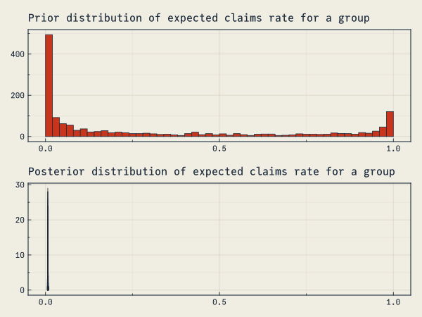

Bayesian vs Limited Fluctuation Experience Analysis
JuliaActuary is an ecosystem of packages that makes Julia the easiest language to get started for actuarial workflows.
modeling
statistics
experience-analysis
bayesian
Alternate title: Why actuaries should cease to care about the number 1082.
Introduction
This notebook briefly discusses two approaches to experience analysis (rate setting). One traditional method, Limited Fluctuation Credibility (LFC), has been around for a very long time although was never intended to be the most accurate predictive method. However, many actuaries still discuss the notion of “full” or “partially” credible indicating a reliance on the LFC concepts.
The Bayesian approach uses explicit assumptions about the statistical relationships and all data given to the model to make inferences. Small datasets lead to greater uncertainty, while larger datasets never reach a point that could be considered “fully credible”, although the posterior density may narrow considerably.
This notebook argues that the Bayesian approach is superior to the LFC heuristics and should be adopted more widely in actuarial practice.
The example will use an auto-claims dataset and will use the first two years of experience to predict the third.
WARNING: Constructor for type "HMC" was extended in `StatisticalRethinking` without explicit qualification or import.
NOTE: Assumed "HMC" refers to `Turing.HMC`. This behavior is deprecated and may differ in future versions.`
NOTE: This behavior may have differed in Julia versions prior to 1.12.
Hint: If you intended to create a new generic function of the same name, use `function HMC end`.
Hint: To silence the warning, qualify `HMC` as `Turing.HMC` in the method signature or explicitly `import Turing: HMC`.
Limited Fluctuation Credibility
The Limited Fluctuation Method was so named because it allowed premiums to fluctuate from year to year based on experience, while limiting those fluctuations by giving less than full credibility to premiums based on limited data. In contrast, setting premium rates by giving full credibility to recent experience could be called the Full Fluctuation Method. While every credibility method serves to limit fluctuations, this method acquired its name because it was the first. The Limited Fluctuation Method, also known as Classical Credibility, is the most widely-used credibility method because it can be relatively simple to apply. Outside North America, this method is sometimes referred to as American Credibility.
Using the inputs above, we have a z-score corresponding to 0.9 of 1.6448536269514717, so: ( 1.6448536269514717 ÷ 0.05)² ≈ 1082. ““”
Atkinson goes on to nicely summarize the square root method which assigns full credibility, \[Z = 1\], when the number of actual claims equals or exceeds the full credibility threshold of $LC_full_credibility claims.
When the number of claims is less than full credibility:
\[
Z = \sqrt{\frac{\text{no. claims in group}}{\text{no. claims full credibility}}}
\]
Issues with Limited Fluctuation
Ignores available information:
Why does our \(Z\) not vary by exposures?
No mechanism for a related group to inform the credibility of another
Results in a single point estimate with only approximate measure of estimate uncertainty
Relies on a number of assumptions/constraints:
That aggregated claims can be approximated by a normal distribution
The thresholds of $LC_p and $LC_r are arbitrary (e.g. all of the same arguments against p-value thresholds can apply to this approach) ““”
Bayesian Approach
Bayes’ formula of updating the posterior probability conditioned on the observed data:
\[
P(A\mid B) = \frac{P(B \mid A) P(A)}{P(B)}
\]
This is well known to most actuaries… but generally not applied frequently in practice!
The issue is that once the probability distributions and data become non-trivial, the formula becomes analytically intractable. Work over the last several decades has set the stage for addressing these situations by developing algorithms that let you sample the Bayesian posterior, even if you can’t analytically say what that is.
A full overview is beyond the scope of this notebook, which is simply to demonstrate that Limited Fluctuation Credibility is of questionable use in practice and that superior tools exist. For references on modern Bayesian statistics, see the end notes.
Note that this is describing a different, more first-principles approach than the the Buhlman Bayesian approach, which attempts to simply relate group experience to population experience. The Bayesian approach described here is much more general and extensible.
The formulation
Contrary to Limited Fluctuation, the Bayesian approach forces one to be explicit about the presumed structure of the probability model. The flexibility of the statistical model allows one to incorporate actuarial judgement in a quantitative way. For example, in this example we assume that the claims experience of each group informs a global (hyperparameter) prior distribution which we could use as a starting point for a new type of observation. More on this once the data is introduced.
Sample Claims Prediction
The data comes from an Allstate auto-claims data via Kaggle. It contains exposure level information about predictor variable and claim amounts for calendar years 2005-2007.
For simplicity, we will focus on the narrow objective of estimating the claims rate at the level of automobile make and model. We will use the years 2005 and 2006 as the training data set and then 2007 to evaluate the predictive model.
The original data is over 13 million rows, we will load an already summarized CSV and split it into train and test sets based on the Calendar_Year.
Each group (make and model combination) has an expected claim rate \(μ_i\), which is informed by the global hyperparameter \(μ\) and variance \(\sigma^2\). Then, the observed claims by group are assumed to be distributed according to a Poisson distribution.
A complete overview of modern Bayesian models is beyond the scope of this notebook, but a few key points:
We are forced with the Bayesian approach to be explicit about the assumptions (versus all of the implicit assumptions of alternative techniques like LF)
We set priors which are the assumed distribution of model parameters before “learning” from the observations. With enough data, it can result in a posterior that the prior was very skeptical of beforehad.
With the volume of data in the training set, the priors we select here are not that important. Some comments on why they were chosen though:
The rate of claims is linked with a logistic function, which looks like an integral sign of sorts. logistic(0.0) equals 0.5 while very negative inputs approach 0.0 and positive numbers approach 1.0. We do this so that the rate of claims is always constrained in the range \((0,1)\)
μ \sim Normal(-2,4) says that we expect the population of auto claims rate to be less than 0.5 (`logistic(-2) ≈ .12) but very wide range of possible values given the wide standard deviation.
σ \sim Exponential(0.25) says that we expect the standard devation of an individual group to be positive, but not super wide.
μ_i \sim Normal(μ,σ) is the actual prior for each group’s rate of claim and is informed by the above hyperparameters.
@model is a Turing.jl macro which enables interpreting the nice ~ syntax, which makes the Julia code look very similar to the traditional mathematical notation.
Note the use of broadcasting with the dot syntax (e.g. the . in .~). This tells Julia to vectorize and fuse the computation.
data.claims ~ product_distribution(Poisson.(data.n .* logistic.(μ_i))) means “each value in data.claims is a random outcome (~) distributed accroding to a corresponding Poisson distribution with \lambda =n \times \text{logistic}(\mu_i) where text{logistic}(\mu_i) is the average claims rate for each group.
@modelfunctionmodel_poisson(data, claims)# hyperparameter that informs the prior for each group μ ~Normal(-2, 4) σ ~Exponential(0.25)# the random variable representing the average claim rate for each group# filldist creates a set of random variable without needing to list out each one μ_i ~filldist(Normal(μ, σ), length(unique(data.Blind_Model)))# use the poisson appproximation to the binomial claim outcome with a# logisitc link function to keep the probability between 0 and 1 claims ~product_distribution(Poisson.(data.n .*logistic.(μ_i)))end
model_poisson (generic function with 2 methods)
Here’s what the prior distribution of claims looks like… and peeking ahead to what the posterior for a single group of claims looks like. See how even though our posterior was very wide (favoring small claims rates), it was dominated by the data to create a very narrow posterior average claims rate.
The model is combined with the data and Turing.jl is used to computationally arrive at the posterior distribution for the parameters in the statistical model, \(\mu\), \(\mu_i\), and \(\sigma\).
mp =let# combine the different years in the training set condensed =@chain train begingroupby(:Blind_Model)@combinebegin:n =sum(:n):claims =sum(:claims)endendmodel_poisson(condensed, condensed.claims)end
Here’s where recent advances in algorithms and computing power make Bayesian analyis possible. We can’t analytically compute the posterior distribution, but we can genererate samples from the posterior such that the frequency of the sampled result appears in proportion to the true posterior density. This uses a technique called Markov Chain Monte Carlo, abbreviated MCMC. There are different algorithms in this family, and we will use one called the No-U-Turn Sampler (NUTS for short).
The result of the sample function is a set of data containing data that is generated in proportion to the posterior distributions and we will use this data to make predictions and understand the distribution of our parameters.
Run the chain:
cp = MCMCChains.Chains(sample(mp, NUTS(), 500; check_model=false)) # this is the line that runs the MCMC sampler# ╔═╡ 6b5d2186-78ac-48ae-8529-e0dcd51d0b00let# sample from the priors before learning from any data ch_prior = MCMCChains.Chains(sample(mp, Prior(), 1500; check_model=false)) f =Figure() ax =Axis(f[1, 1], title="Prior distribution of expected claims rate for a group") μ =vec(ch_prior["μ_i[1]"].data)hist!(ax, logistic.(μ); bins=50) ax2 =Axis(f[2, 1], title="Posterior distribution of expected claims rate for a group") μ =vec(cp["μ_i[1]"].data)hist!(ax2, logistic.(μ); bins=50)linkxaxes!(ax, ax2) fend

Visualizing the Posterior Density
This is a plot of the posterior density for all of the many, many \(\mu\) parameters in our model. The black line shows the distribution which comes from our hyperparameters μ and σ. In the event of coming across a new group of interest (in our case, a new make of car), this is the prior distribution for the expected claims rate. The model has learned this from the data itself, and serves to regularize predictions.
Utilitiy Function to Plot the Posterior
""" dplot(chain,parameter_string)plot the posterior density for model parameters matching the given string."""functiondplot(ch, param_string) f =Figure() ax =Axis(f[1, 1])# plot each group posteriorfor (ind, param) inenumerate(ch.name_map.parameters)ifcontains(string(param), param_string) v =vec(getindex(ch, param).data)density!( ax, logistic.(v), color=(:red, 0.0), strokecolor=(:red, 0.3), strokewidth=1, strokearound=false, label="Individual group posterior" )endend# Plot hyperparameters hyper_mean =mean(getindex(ch, :μ).data) hyper_sigma =mean(getindex(ch, :σ).data) d =density!( ax, logistic.(rand(Normal(hyper_mean, hyper_sigma), 1000)), color=(:black, 0.0), strokecolor=(:black, 0.3), strokewidth=3, strokearound=false, label="Hyper-parameter distribution" )xlims!(0.0, 0.03)hideydecorations!(ax)axislegend(ax, unique=true)return fenddplot(cp, "μ")
Predictions and Results
Here we compare four predictive models:
Naive, where the predicted rate for the 2007 year is the average of each groups’ for 2005-2006
Limited Fluctuation Overall, where the “prior” in the LFC formula is the overall mean claim rate for 2005-2006
Limited Fluctuation Year-by-Year where the “prior” in the LFC formula is the claim rate for the ith group in 2005 and updated using 2006 claim rates.
Bayesian approach where the predicted claim rate is based on the bayesian model discussed above.
Predictions
Bayesian approach has lower error
Looking at the accumulated absolute error, the bayesian approach has about 16% lower error than the Limited Fluctuation approaches.
Total Actual to Expected
Here, offsetting errors happen to make the naive and LF year-by-year (the latter is a good proxy for the former) such that their total A/E is better than the Bayesian approach.
Given the lower error of the Bayesian approach, one would expect that over multiple years that it would produce more accurate predictions than the alternative methods.
Conclusion
This notebook shows that the Bayesian approach results in claims predictions with less total predictive error than the limited fluctuation method.
Further thoughts
The Bayesian approach could be extended to improve its accuracy even further:
Using vehicle make data to add more hierarchical structure to the statistical model. For example, one may observe that Porsches experience crashes at a higher rate than Volvos. LFC cannot embed that sort of overlapping hierarchy into its framework.
The Bayesian hyperparameter provides a framework to think about “unseen” make-model combinations
Downsides to the Bayesian approach
Computationally intensive. Complex @models can take very long time to run (many hours), compared to relatively quick frequentest methods like maximum likelihood estimation.
Further Reading
If this notebook has piqued your interest in Bayesian techniques, the following books are recommended learning resources (from easiest to most difficult):
Statistical Rethinking
See also StatisticalRethinking.jl for Julia implementations of all of the book’s code and utility functions
Bayes Rules!
Bayeisan Data Analysis
Appendices
Additional legwork to get the alternate limited fluctuation approach data:
# An alternate approach to LFC where the first year becomes the prior, adjusted by data from the seonc year.LF2 =let# split dataset by year and recombine df2005 =@subset(train, :Calendar_Year .==2005) df2006 =@subset(train, :Calendar_Year .==2006) df =outerjoin(df2005, df2006, on=:Blind_Model, renamecols="_2005"=>"_2006")# use 2005 actuals as LFC prior, and the overall mean if model is missing μ_2005 =sum(skipmissing(df.claims_2005)) /sum(skipmissing(df.n_2005)) df.assumed =coalesce.(df.p_observed_2005, μ_2005) df.LF2_Z =min.(1, .√(coalesce.(df.claims_2006, 0.0) ./ LC_full_credibility)) df.LF2_μ =let Z = df.LF2_Z# use the 2005 mean if the model not observed in 2006 Z .*coalesce.(df.p_observed_2006, μ_2005) .+ (1.- Z) .* df.assumedend dfendclaims_summary_posterior =let# combine the dataset by model df =@chain train begingroupby(:Blind_Model)@combinebegin:n =sum(:n):claims =sum(:claims)endend pop_μ =sum(df.claims) /sum(df.n) df[!, :pop_μ] .= pop_μ## Bayesian prediction# get the mean of the posterior estimate for the ith model group means =map(1:length(unique(df.Blind_Model))) do i d =logistic.(getindex(cp, Symbol("μ_i[$i]")).data) (est=mean(d), se=std(d))end df.p_observed = df.claims ./ df.n df.bayes_μ = [x.est for x in means] df.bayes_se = [x.se for x in means]## Limited Fluctuation (square root rule)# using overall population mean# using the square-root rule df.LF_Z =min.(1, .√(df.claims ./ LC_full_credibility)) df.LF_μ =let Z = df.LF_Z Z .* (df.p_observed) .+ (1.- Z) .* pop_μend## Limited Fluctuation# using the first year as the prior, 2nd year as new data# using some additional procesing to get the LF2 dataframe, see appendix df2005 =@subset(train, :Calendar_Year .==2005) dict2005 =Dict( model => ratefor (model, rate) inzip(df2005.Blind_Model, df2005.p_observed) ) df =leftjoin(df, LF2[:, [:Blind_Model, :LF2_μ]], on=:Blind_Model) df =innerjoin(df, test; on=:Blind_Model, renamecols="_train"=>"_test")# predictions on the test set using the predictive rates time exposures df.pred_bayes = df.n_test .* df.bayes_μ_train df.pred_LF = df.n_test .* df.LF_μ_train df.pred_LF2 = df.n_test .* df.LF2_μ_train df.pred_naive = df.n_test .* df.p_observed_trainsort!(df, :n_train, rev=true)end
With limited, real-world data drawing conclusions is a little bit messy because we don’t know what the ground-truth should be, but here are some thoughts that seem to be consistent with what the data and results suggest:
The Bayesian approach partially pools the data: it’s an approach in-between assuming each group is independent from the rest and assuming that a single rate applies to all exposures.
The partial pooling limits over-fitting, which happens with the naive approach. Our Bayesian approach is somewhat skeptical of groups with low observation counts that stand out from the rest. But it also doesn’t forgoe useful data, as it learns from even low exposures according to what’s consistent with probability theory (Baye’s rule).
The naive approach is pretty close to the textbook definition of over-fitting. The LF approaches appear to be under-fitting group-level as there are only $(sum(claims_summary_posterior.LF_Z_train .>= .9999)) groups with “full credibility” (Z=1), even though there are groups with less than “full credibility” with over 100,000 observations in the training set.